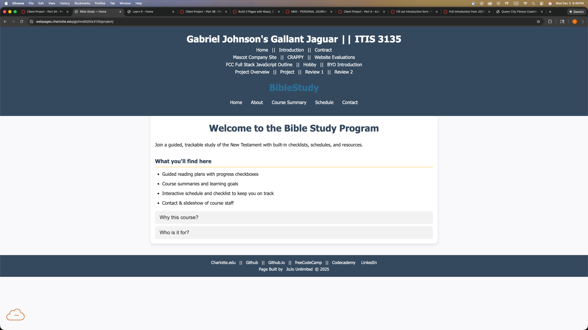

Peer Review 1 - Johnson, Gabriel

Client project site for Johnson, Gabriel:
view full site
Design
- Contrast:
- Text is clear and easy to read, background and font colors contrast well.
- Repetition:
- Font choices, colors, and spacing are consistent across pages.
- Alignment:
- Page layout is well-structured; elements line up neatly and the page feels balanced.
- Proximity:
- Related items are grouped together logically and spacing prevents clutter.
Links / Navigation
- Course link:
- The provided link from the course site correctly opens the peer’s project home page.
- Internal navigation:
- Navigation bar is present on all pages and links work correctly in both directions.
- Nav bar stays in the same position and style across pages.
Elements & Requirements
- Page structure:
- Each page includes header, main content area, and footer as required.
- Home page:
- index.html loads properly and provides a clear introduction to the site.
- Page count:
- There are at least five functional pages in the site.
- Branding text:
- Site name appears appropriately in the header, rather than page-specific titles in the header.
- Media content:
- Pages include images to support content, improving visual appeal and clarity.
- File/folder naming:
- File and folder names are clean (lowercase, no spaces), following good practice.
- Footer & validation links:
- Footer appears on every page and includes space for validator links (or already includes them).
Notes & Suggestions
- Overall, I liked the site.
- I liked the schedule and that you could check off readings and even clear progress easily!
- Good website and good idea behind the website.